| Tasks | ||
|---|---|---|
|
|
|
|
| Concepts | Reference | |
You can create a project first and share it afterwards. The Share Project Wizard supports creation of Git repositories (see Adding a project to version control).
You can also create a new empty Git Repository from the Git Repositories View (see Creating a Repository).
You may first create multiple projects under a common directory and then create a common repository for all projects in one go:
In order to work with the content of a Git repository in the Eclipse workbench, the contained files and folders must be imported as projects. In principle, this import can be done using the generic "New Project" or "Import..." wizards, since the working directory of a Git Repository is just a normal directory in the local file system. However, the newly created projects would still have to be shared manually with Git. The "Import Projects from Git" wizards integrates project import and sharing and also offers some extra convenience.
To start the wizard click Import > Git > Projects from Git
If you started in a clean workspace, the first page will display an empty list:
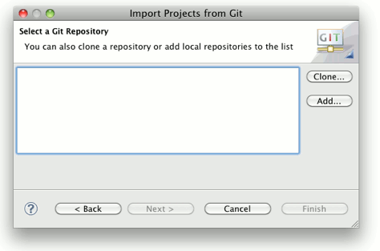
Before you can continue, you need to add one or several Git repositories to the list. If you have already repositories in the list, this step is optional.
There are two ways to add Git repositories to the list:
The first option is used if you start with a remote repository. The clone operation will copy that repository to your local file system. To start the Clone Wizard click Clone.... The Clone Wizard is described in more detail in Cloning Remote Repositories. Upon successful completion of the clone operation, the newly cloned repository appears in the list automatically.
The second option is useful if you already have a repository in your local file system, for example because you have cloned it earlier, you created it from scratch or you copied it from somewhere else. Click Add...; and select a directory in the local file system. Press Search to trigger a scan for Git repositories contained in this directory. If Git repositories are found, they will be listed and you can select repositories to add :
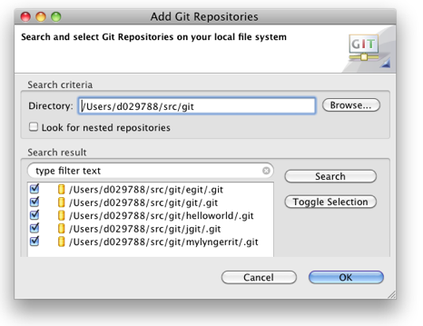
After successful completion, the repository list should contain some repositories:
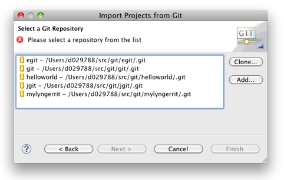
You can now select a repository and click Next. On the following wizard page, you will have to decide:
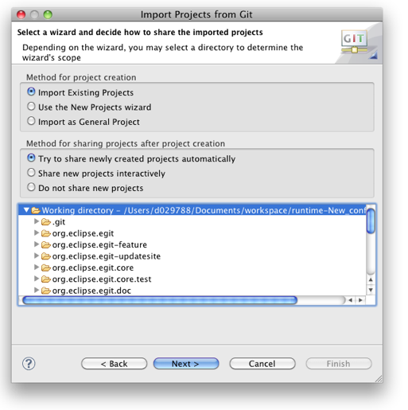
If this radio button is selected, the wizard will scan the local file system for .project files and display the projects found for being imported. This is the most comfortable solution and should be used if .project files are checked into the Repository.
In this case, the directory tree at the bottom is active. You can limit the search for .project files by selecting a folder in this tree, otherwise the complete working directory of the repository will be scanned. On the next page, a list of the found projects (if any) will be shown. This is very similar to the generic Import Existing Projects wizard, but has some additional filtering capabilities:
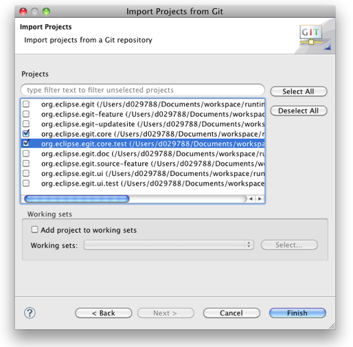
When this option is chosen, the generic "New Project" wizard will open. After completion of the "New Project" wizard, the "Import Projects from Git" wizard will resume and assist with sharing the projects you just created.
In this case, the directory tree at the bottom is inactive, as the selection is not relevant for the "New Project" wizard.
This option can be helpful when there are neither .project files available nor a suitable "New Project" wizard applies to the content of the Git Repository. If chosen, the wizard will generate a .project file and point the project to a folder of the Repository's working directory. The result is a "General Project".
By default, the newly generated project will point to the working directory of the Repository. By selecting some folder from the directory tree at the bottom, you can have the project generated for that folder.
Click Next to open a simple dialog for entering a name and a directory for the new project:
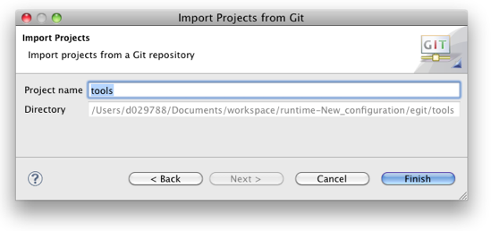
By default the suggested project name matches the name of the directory.
The newly created projects (if any) must be shared with the correct Git Repository in order to enable the Git Team Provider. The following sharing options are provided:
This is the recommended option: the wizard will automatically detect newly created projects and find the corresponding Repository automatically. No user interaction is required. If automatic sharing fails, the projects will simply remain unshared. You can share them any time later manually.
This might be useful for special circumstances where the automatic detection fails. Note that this will block the UI until the project import is completed.
A page will be shown with the newly created projects and the corresponding repositories. Using the check boxes, you can decide which projects to share:
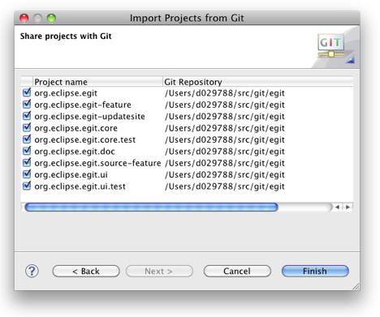
This may be helpful if for some reason you want to share projects manually.
Using the Git Clone Wizard you may clone remote repositories using different transport protocols.
The wizard can be started from the "Import Projects from Git" wizard using
Import... > Git > Projects from Git > Next > Clone...
or from the "Git Repositories View" (described in Managing Repositories) using the Clone a Git Repository toolbar button.
On the first page of the wizard enter the location of the remote repository:

The following protocols are supported:
Note: EGit 0.9 does not yet support authentication via HTTP or HTTPS protocol.
On the next page choose which branches shall be cloned from the remote repository:
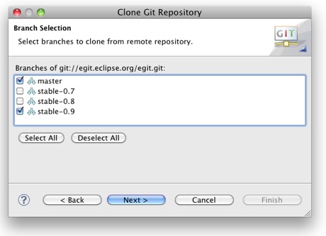
On the next page define where you want to store the repository on the local file system and define some initial settings.
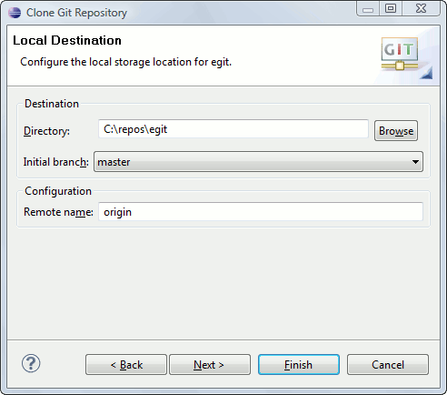
The easiest way for pushing is to use Direct Push Support on a Push Specification of a Remote.
The other way is using the Push Wizard
Team > Push...
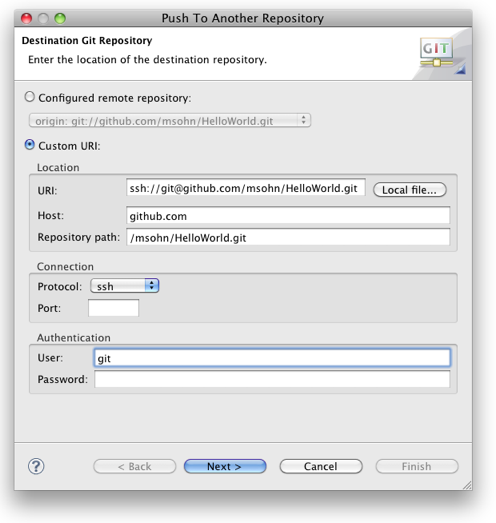
Click
Next
If this is the first time you connect to this repository via ssh you will have to accept the host key of the remote repository
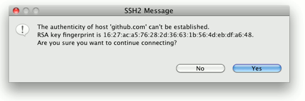
If your ssh key is protected by a passphrase (which is recommended) you have to enter it here
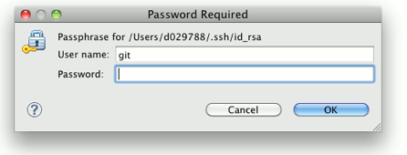
Click Add all branches spec
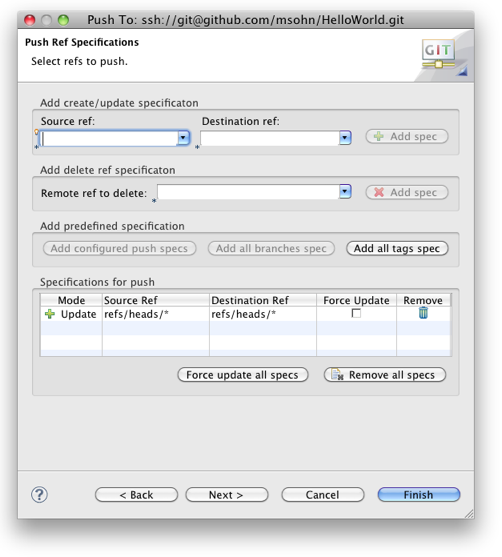
This is a convenient way to declare that you want to map your local branch names to the same branch names on the upstream repository you want to push changes to.
Click Add all tags spec to map local tags 1:1 to tags in the repository you want to push to.
If you want to map local branches to those in the upstream repository in a different way you may define more detailed mapping specifications in the following way
This will transfer the newly defined mapping to the list Specifications for push
Other common push specs:
To delete a ref in the destination repository select the ref to be deleted from the drop-down list Remote ref to delete and click Add spec. This will create a corresponding entry in the Specifications for push list. Alternatively you may type in the specification for the refs to be deleted, this may also use wildcards. Pushing Delete Ref Specifications will delete the matching Refs in the destination repository.
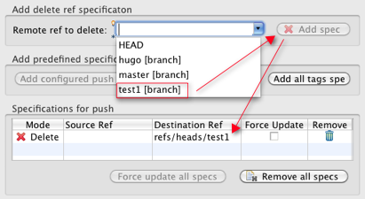
If you add multiple conflicting Push Ref Specifications they will be marked in red, solve this by removing or editing the conflicting specs. It is also possible to edit the specs in-place in the list Specifications for push
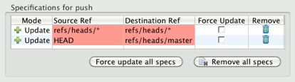
Click Next
This will open the Push Confirmation dialog showing a preview which changes will be pushed to the destination repository. If this does not match your expectation click Back and correct your push specs accordingly.
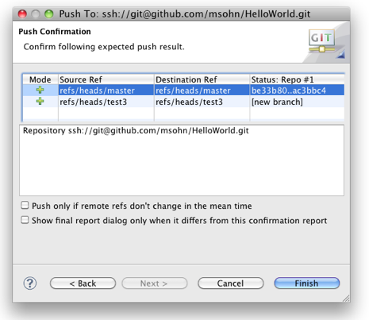
Click Finish
Depending on the options you have chosen a push result report dialog is shown
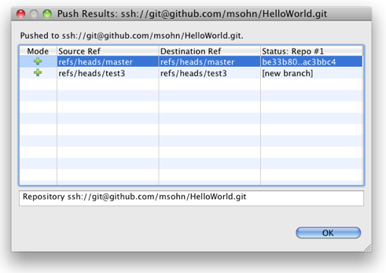
In the box at the bottom the push confirmation message from the remote server is displayed. In case of any errors you will find the error message from the remote server here. To see the message for a given list entry simply select it in the list.
Click Ok to close the dialog.
The easiest way for fetching is to use Direct Fetch Support on a Fetch Specification of a Remote.
The other way is using the Fetch Wizard
Team > Fetch...
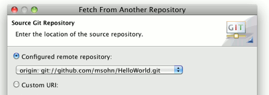
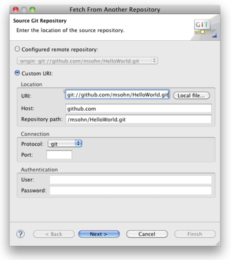
Click
Next
Click
Add all branches spec
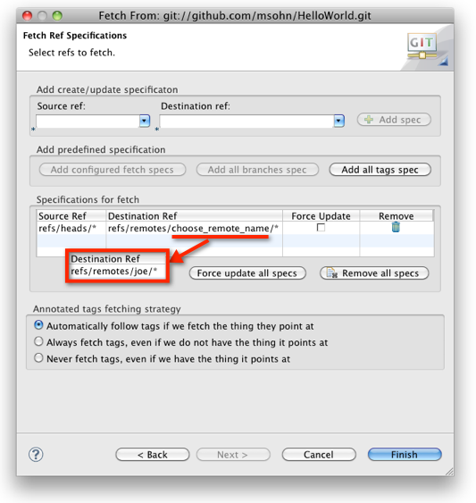
This is a convenient way to declare that you want to map the branch names in the upstream repository you want to fetch changes from 1:1 to the same local branch names.
If you want to map branches or tags in the upstream repository to local branches in a different way you may define more detailed mapping specifications in the following way
This will transfer the newly defined mapping to the list Specifications for fetch
Click Finish
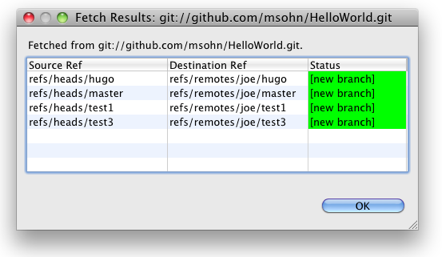
A fetch result dialog is shown.
This is not yet fully available.
In cases where fast-forward merges are sufficient (full merge is not yet implemented) you may run pull in EGit in the following way:
Available alternatives currently include:
Label decorations show Git specific information on resources under Git version control. They appear in all views showing model objects, like Package Explorer, Project Explorer, Navigator, Hierarchy View.
The Git label decorations can be switched on globally in the Preference Menu ( Window > Preferences) under General > Appearance > Label Decorations.
More detailed settings can be done in the Preferences under Team > Git > Label Decorations.
There are two different types of label decorations: text decorations and icon decorations.
Text decorations appear on the left or right side of the text label. They can be configured on the Preferences dialog under Team > Git > Label Decorations on the tab Text Decorations. For example, the default for a dirty resource is a > on the left side of its name.
These are the default settings:

For files and folders there are the variables "name", "dirty" and "staged". "Dirty" and "staged" are flags; if they are true, the text after the colon is displayed.
For projects there are the additional variables "repository" and "branch". The "repository" variable displays the name of the repository.
The "branch" variable displays the name of the currently checked out branch. If no branch is checked out, the decoration shows the shortened name of the commit (first seven characters followed by ellipsis). If tags and/or remote branches are pointing to this commit, a "best guess" heuristic is applied to also show this information: tags take precedence over remote branches, if several tags apply, the newest one is displayed; if there are several remote branches or tags have no modification date, then alphabetic sorting is applied and the last one is shown. Example: the checked out commit
e49f576... refers to tag
v.0.7.1 of repository
egit:

Icon decorations appear on the lower right corner of the icon displayed in front of the label. They can be configured on the Preferences dialog under Team > Git > Label Decorations on the tab Icon Decorations.
These are the default decorations:

A summary of the status of all modified tracked files is displayed on the commit dialog. By double clicking a file the changes to be committed will be displayed in a compare dialog. As EGit currently always commits the content of the working tree (corresponding to git commit -a on the command line) the compare dialog will compare the working tree with the last commit.
In daily work you will often want to see the changes between your last commit, the index, and the current working tree.

Currently a compare dialog can only be opened for a single selected file.
The difference between a file in the current working directory and in the last commit in the current branch can be viewed from the context menu "Compare With" -> "HEAD revision". This feature is also available in the Commit dialog. Double clicking on an entry in the Commit dialog opens a compare dialog.
The difference between a file in the current working directory and in the index can be viewed from the context menu Compare With > Git Index.
This feature is not implemented yet.
The difference between two branches can be viewed from project's context menu Team > Synchronize. If the git repository contains multiple Eclipse projects it is enough to select one project, the Synchronization view will include all other projects. It is critical to have all important files/projects imported into Eclipse because the Synchronization view can only dispatch and show files that are known as a resource in Eclipse any other files will never appear in the Synchronization view.
After launching Synchronize action the Synchronization dialog will appear.
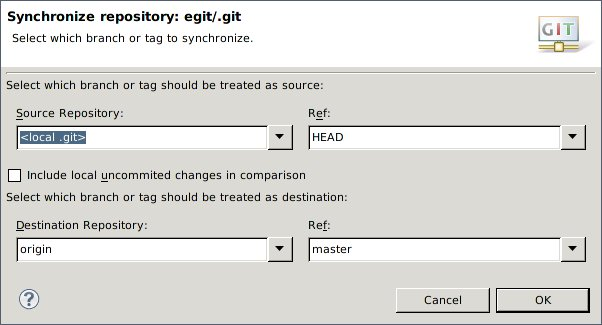
Here you can select two branches that should be compared. By checking "include local uncommited changed files" you can include locally made changes and currently staged files in comparison (currently this is not supported by ChangeSet implementation).
It is also possible to compare multiple repositories at once. In this case for each repository the Synchronize dialog will appear and you could select a different configuration for each repository.
Instead of using a compare editor you can enable quick diff support and see the changes within the text editor.
This feature can be enabled via the
General > Editors > Text Editors > Quick Diff preference page:

The difference annotation will then be displayed on the left hand side of the editor:

If you move your mouse over the annotation you see the content of the version you are comparing to:

Per default, the comparison is against the HEAD. You can determine the version you are comparing to, the so-called quickdiff baseline, from the context menu of a commit in the history view ( Show in > History). There are three menu entries:
To display the diff for a given commit

Modifications to a project under git version control are persisted in the git history through commits. Starting from the state checked out from the git repository modify your project until you have reached a state you are satisfied with and then commit all these changes into the repository as one single commit. Each commit represents a well defined snapshot of all the files stored in the repository.
To modify a project which is already shared with Git modify or delete files either within Eclipse or directly in the file system. There is no need to tell Git in advance about these operations. New files which should be version-controlled have to be explicitly put under Git version control :
Alternatively you may display untracked files in the Commit dialog and check the Show untracked Files checkbox to select them for inclusion into the commit.
Label decorators e.g. in the Package Explorer View show
For details see Label Decorations.
Here is an example in the Package Explorer for
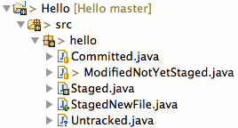
To commit a change click Team > Commit... in the context menu of a resource in the project.
Git tracks all changes made to the entire repository capturing the modifications of all version-controlled files in that repository not regarding if these files reside in the same Eclipse project or not.
Once you have triggered the commit the Commit Dialog will pop-up
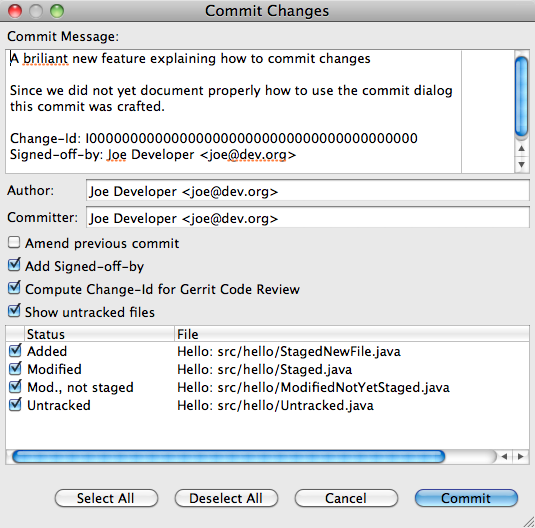
In the Commit Dialog you specify the commit message describing the change.
It is good practice to start the message with a short first line summarizing the change followed by a blank line and then the message body. In order to ensure that also git command line tools can format these messages nicely the lines shouldn't be formatted too wide (this is indicated by a grey vertical line). The commit message text is checked for errors by the Eclipse spell checker. The spell checker can be configured via the Eclipse Preferences > General > Editors > Text Editors > Spelling. Click Ctrl - 1 to open quick fixes which may help to fix the spelling errors.
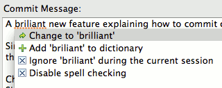
Footer Tags
In the last paragraph of the commit message optional footer tags may follow :
Bug: 3176 Change-Id: I267b97ecccb5251cec54cec90207e075ab50503e Reported-by: Joe Developer <joe@dev.org> Signed-off-by: William Shakespeare <will.from@the.past>
The semantics of these tags are project or tool specific
Additionally this dialog controls which of the changes will be included in the commit. If you clear the checkbox in front of a file, the changes to this file will not be included in the commit. The local file in your eclipse workspace will still contain the modifications giving you the chance to commit these changes with a subsequent commit. This feature is often used to separate modifications done to a set of files into different commits.
One example: Imagine since the last commit you have fixed a bug in A.java and you have added a new method to B.java. These two modifications are logically independent from each other hence you may want to commit them in two independant commits. In this case you initate the commit, deselect B.java from the set of committed files and specify a commit message describing only the bugfix in A.java. After a succesfull first commit you just call commit again and the upcoming dialog will present you the remaining changes in B.java. Now you specify a commit message describing the addition of the method and finish the second commit.
New files you added to the project which have not been explicitly added to version control (see "Modifying the content") will be listed in the commit dialog if you select the checkbox "Show untracked Files". If you select the checkbox in front of these files in the list they will be added to the repository and committed once you press the commit button. Files which are excluded by the team ignore list or a .gitignore file or which are derived (e.g. the bin folder in java projects) will not be shown here. If you have no other changes in your repository than such untracked files the checkbox Show untracked Files is selected by default.
If you recognize that you missed something when committing a change you may fix this : open the commit dialog again and specify that the current commit shall "amend" the previous commit in the current branch. The new commit will then replace the previous one. This feature is often used to correct wrong commits before they are published to other repositories.
Note: do not amend commits if they have already been published to a shared repository since this may disturb others if they already based their changes on the published change.
Amend example:
Imagine you have committed a change to a file containing a typo

After committing the change you detect a typo. In order to correct this typo and the corresponding commit you just fix the typo in the source file

then open the Commit Dialog again and select the option Amend previous commit.
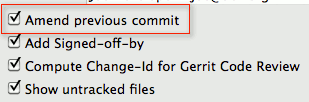
The commit message of your previous commit (the one you want to replace) is filled into the "Commit Message" field. This gives you the chance not only to correct errors in the content of the version-controlled files but to also correct errors (e.g. typos) in the commit message describing your change.
As an alternative to amending you could just commit the corrected version as a subsequent commit. But the first commit containing the typo is of no use to anybody and in order not to clutter the history of your project with unneeded commits you may decide to amend the commit.
Be aware that amending commits which are already published to other repositories may cause trouble. Once you have pushed a commit to a remote repository or your local repository was cloned by somebody else you should be very careful whith amending commits. In this case publishing a second commit which corrects the first one is probably a better solution. Otherwise inform all others that you amended a published commit so that they can react accordingly.
Changes which are not yet committed and not yet staged can be reverted for a set of selected files. Select the file(s) in the Package Explorer or an analogous view and click Replace With > File in Git Index.
This feature is currently not available on single file level. You can use Reset to with option hard to forcefully reset the entire working tree of your repository back to the state of the HEAD commit (See "Resetting your current HEAD" below). This operation will revert all changes in the working tree and the index. You can't do it on a selected set of files using EGit yet.
Git offers the possibility to reset the HEAD of the current branch to any other commit. It optionally resets the index and the working tree to match that commit. Note that this action affects all files and folders in the enitre repository.
You have the option to do a hard reset, a mixed reset and a soft reset.
Select Team -> Reset... on a project. This opens a dialog where you can select a branch or a tag.
Select a commit in the History view and open the context menu. Here you find the entries Hard reset, Mixed reset and Soft reset.
This can be done as a special case of reset. If you reset to the current HEAD (normally the last commit on your branch) with the option hard you overwrite the working tree and the index with the content of the HEAD. You can do this in three ways:
The Repositories View supports the following branching actions:
To open the branching dialog click
Team > Branch...

In history view a new branch can be created based on a given commit: select a commit in the history view and execute Create Branch... on the context menu. A dialog for branch creation appears:
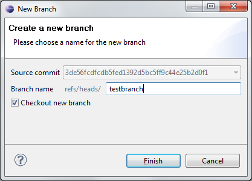
A merge incorporates changes from named commits (since the time their histories diverged from the current branch) into the current branch.
You have two places where you can trigger the merge:
In the Package Explorer or Navigator, open the context menu on a project node. Select Team > Merge...
Now the merge dialog opens:

On the dialog, select a branch or a tag you want to merge with your current branch.
You can trigger a merge from any branch and tag node and from the repository node if you have checked out a local branch. See Merging a Branch or a Tag for further details.
After pressing the Merge button, the following scenarios can occur:
The result of a merge is summarized in a dialog:
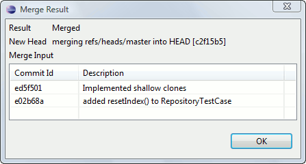
On the first line you see the result of the merge. The possible results are "Already-up-to-date", "Fast-forward", "Merged", "Conflicting" or "Failed". A possible reason for "Failed" may be that there are conflicting changes in the working directory.
On the second line you see the new HEAD commit in case of a successful merge (Already-up-to-date, Fast-forward or Merged).
In the table you see the commits which were merged.
A merge can result in conflicts which require user action. This is the case when the content of files cannot be merged automatically. These conflicts are marked with a label decoration in the navigation tree. The merge conflicts in the content of files are presented with textual conflict markers (see http://www.kernel.org/pub/software/scm/git/docs/git-merge.html#_how_conflicts_are_presented for more details).
To resolve a conflict you have to do the following steps:
A repository which contains conflicting files has the textual label decorator "|Conflicts" attached to the repository name. Conflicting resources and folders containing such conflicting resources get a conflict label decoration.
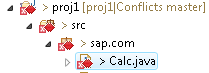
In the file content, the area where a pair of conflicting changes happened is marked with markers <<<<<<<, =======, and >>>>>>>. The part before the ======= is typically your side, and the part afterwards is typically their side (see http://www.kernel.org/pub/software/scm/git/docs/git-merge.html#_how_conflicts_are_presented for more details).
Open the file in an editor, edit the content and save the editor.
Note that this step is not mandatory. EGit does not check the content to decide if a conflict is resolved. The next step is the relevant one.
Once you are finished with editing a file select Team > Add to add the conflict resolution to the git index. You can do it on a folder or the whole project to resolve all conflicts at once.
When you have resolved all conflicts the textual repository label decoration changes to "Merged". There are no conflict markers anymore.
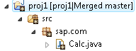
When the repository is in state "Merged" (as is indicated with the textual label decorator "|Conflicts" attached to the repository name) the merge can finally be committed.
Select Team > Commit... anywhere in the navigation tree. The commit dialog opens with a slightly different look compared to a normal commit:
After pressing the "Commit" Button the merge is completed.
If a merge resulted in conflicts you can abort the merge with a hard reset to the current branch. This can be done in state "Conflicts" and in state "Merged", i.e. before and after you have resolved the conflicts.
The hard reset can be done from the team menu, the Git Repositories View and the History View. See [ Revert all local and staged changes for more details.
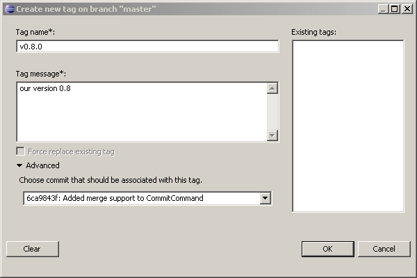
Tags can also be created in the history view: select a commit and execute Create Tag... in the context menu. The tag will be created on the selected commit:
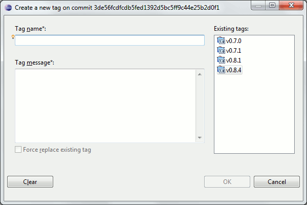
What to do if you tagged the wrong commit or ended up with some sort of typo ?
So if your old tag wasn't yet pushed you may correct it in the following way :
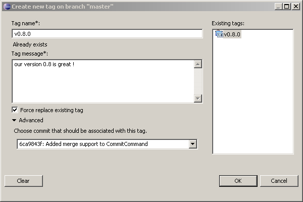
Light-weight and signed tags are not yet supported by EGit, use command line git tag or git tag -s as a workaround
"A patch is a piece of software designed to fix problems with, or update a computer program or its supporting data" ( wikipedia). A patch file contains a description of changes of a set of resources which can be automatically applied to another eclipse workspace or git repository.
The patch formats used by eclipse ( Team > Apply Patch) and by git ( git apply or git am on the command line) are different. It is possible to create both types of a patch in EGit.
This is the most common use case for a distributed versioning system. A developer commits a change on a local feature or bugfix branch and wants to export this change into a patch file.
It can be done from the history view:
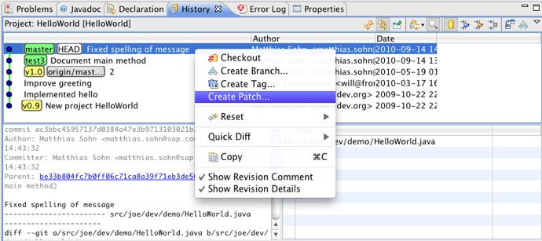
The patch file will contain the difference between the commit and its parent in the history view. Note that the filter of the history view applies also for patch creation.
The Wizard consists of two pages. Page one lets you select the location of the patch:
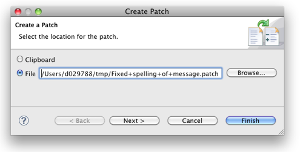
The name of the patch file is created from the first line of the commit message.
On the second page you can change the patch format.
Currently there is one check box: Export in git patch format.
Currently it s not possible to apply patches in git format. It is possible to apply patches using the standard eclipse format using Team > Apply Patch....
The "Git Repositories View" is the primary UI element to facilitate working with multiple Repositories simultaneously (i.e. within one Eclipse Workspace).
This view can be opened using the menu path
Windows > Show View > Other... > Git > Git Repositories
It is also part of the "Git Repository Exploring" perspective available using menu path
Window > Open Perspective > Other... > Git Repository Exploring
If you already have projects in your workspace which are shared with a Git Repository, you can use
Show In... > Git Repositories or
Team > Show in Repositories View
on any resource to open the view.
Initially, the Git Repositories View is empty. In order to add Repositories to it, there are several options:
You can add a Repository from your local file system to the Git Repositories View without cloning it. This can be helpful if you are setting up a new Eclipse workspace and want to re-use your Git Repositories. Use the Add an existing Git Repository button from the view's toolbar:

A dialog will appear prompting you for a directory of your local file system. After selecting the correct directory, you can hit the Search button to see a list of Git Repositories in this directory. You can then select some or all found Repositories and add them to the view using OK:

In order to clone a Repository, refer to Cloning remote Repositories. After a successful clone operation, the newly cloned Repository should appear in the Git Repositories View automatically.
You can also use the Clone a Git Repository button from the view's toolbar to start the Clone wizard:

Please refer to Cloning remote Repositories about how to use the wizard.
You can create a new, empty repository on the local file system. This is useful if you later on want to create one or more new projects below this repository. Another usecase is to create a new bare repository where you can push to. Use the Create a new Git Repository button from the view's toolbar:
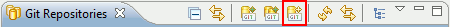
A dialog will appear which lets you choose a directory:

If you select the checkbox Create as Bare Repository the new repository will not have a working directory. You then can only add content by pushing changes from another repository.
As a shortcut, it is also possible to paste the local file system path of a Git repository from the clipboard into this view. In order to do so, copy the path of a Git repository (the full path of its .git folder) to the clipboard, then open the context menu on the view panel:

or click Edit > Paste from the main menu (or the corresponding keyboard shortcut). If the clipboard content is not suitable, an error popup will be displayed, otherwise the added Repository should appear automatically.
After the view has been populated with some repositories, it should look like this:

The following screenshot shows the topmost two levels of the Git Repositories View:

The root node represents the Repository itself. The node text indicates the name of the Repository and its location in the local file system. The "Branches" and "Tags" nodes allow browsing and manipulation of tags and branches. The "Symbolic References" node lists other references which are not branches or tags, most notably the "HEAD" symbolic reference.
The "Working directory" node displays the location and structure of the working directory on the local file system (only in case of a development, or non-bare Repository, for bare Repositories, this node is always a leaf).
Finally, the "Remotes" node allows browsing and manipulating the remote configurations used for Fetch and Push.
In order to work with the contents of a Git Repository, its files and folders must be imported into the Eclipse workspace in the form of projects. While the Git Clone wizard allows to do such imports directly after cloning, the Git Repositories View allows to trigger project imports independently of the clone operation.
The "Import Projects..." context menu is available on the "Repository" node as well as on any "Folder" node within the "Working Directory" node and the "Working Directory" node itself:

The rationale for offering the Import Projects... action on several nodes is that some of the wizards used for importing projects can take the file system directory into account, for example the Import Existing Projects wizard. If the import is started from the "Repository" or the "Working Directory" node, the working directory of the repository is set as context, otherwise the directory corresponding to the currently selected "Folder" node.
The details of project import are discussed in Use the New Projects Wizard.
The "Branches" node allows to create, browse, checkout and delete local and remote branches. The "Tags" node allows for browsing and checking out of tags. Both the "Branches" node and the "Tags" node allow for merging the branch or tag into the currently checked out branch and also for synchronizing with the currently checked out branch.
For better readability, branches are organized in two sub-nodes for local and remote branches, respectively, and only the shortened names are displayed, e.g. instead of "refs/heads/master" you would find an entry "master" under the "Local Branches" node, instead of "refs/remotes/origin/master" the shortened name "origin/master" is displayed under the "Remote Branches" node. Similarly, tag names are shortened by omitting the "refs/tags/" prefix:

Branches and tags can be checked out by either double-clicking on the respective node or by selecting the corresponding context menu entry.
Local branches can be created using a simple wizard. After selecting the corresponding context menu entry (available on the "Branches", the "Local Branches", and on any "Branch" and "Tag" node), you are asked to enter a source branch and a name for the new branch. Depending on whether you have called the wizard from a "Branch" or "Tag" node or not, the source branch drop-down will be pre-selected with either the selected branch, the selected tag or the currently checked-out branch:

You can change the source branch using the drop-down. By default, the newly created branch will be checked out after creation. Deselect the corresponding checkbox on the wizard if you don't want this to happen.
Branch deletion is done using the corresponding context menu entry.
You can trigger a merge from any branch and tag node and from the repository node if you have checked out a local branch. See Merging for further details of the merging features.
You can perform a comparison of the changes in your HEAD with the changes done in any other branch or tag. Right click and select Synchronize... on any branch or tag. Then the eclipse synchronize view opens which contains a representation of the changes that are contained in your HEAD but not on the other branch or tag (outgoing change) or vice versa (incoming change). Please refer to the documentation of the synchronize feature for further details.
There are two ways to determine which branch or tag is currently checked out: the checked out branch/tag node is decorated with a little check mark and the "HEAD" entry under the "Symbolic References" node shows the (full) name of the checked out branch:

Right click and select Reset... on any branch or tag. This opens a dialog which lets you decide on the reset type. See Resetting you current HEAD for further details.
If HEAD is "detached", i.e. is not pointing to the tip of a local branch but to a commit or tag, then none or several "checked-out" markers may appear in the tree, since any number of remote branch or tags may point to the currently checked out commit. The state you are in while your HEAD is detached is not recorded by any branch (which is natural --- you are not on any branch).
The "Working Directory" node visualizes the local file system structure of the Git Repository. It is also possible to open a text editor on the files:

Also, on all file and folder nodes as well as on the "Repository" node, an option is offered to copy the (file-system specific) path to the clipboard. This is sometimes useful when the path is needed, for example to open a directory using a file browser or to copy and paste Repositories between view instances (see above about how to add Repositories to the view). The Copy to Clipboard action is also available using Edit > Copy (or the corresponding keyboard shortcut).
Integration with the generic "Properties" view in Eclipse allows to view and edit the Git Configuration (global and repository-specific configuration). If the "Properties" view is open, it is updated automatically when a "Repository" node is selected. For convenience, an Open Properties view action is provided in the context menu:

With a drop down box (left red box in the screen shot) you can switch between the display of the Repository Configutarion, the Global Configuration and a view which aggregates both. If the view displays the Repository Configutarion or the Global Configuration you can open an editor dialog with the Edit button (right red box in the screen shot). The editor dialog has the same functionality as the preference page Team > Git > Configuration.
The "Remotes" node allows for browsing and editing Remote configurations. Each Remote configuration has a name and either a Push Specification, a Fetch Specification, or both. If a "Remote Configuration" node or any of its children is selected, the Properties view will show a summary of the Remote configuration. In this example: there is a Remote configuration named "origin" which only has a Fetch Specification, but no Push Specification:

Menu actions are provided to add, configure, and remove Remote configurations and Fetch and Push Specifications.
It is possible to execute fetch and push directly (i.e. without a wizard) on the respective "Fetch" and "Push" nodes:

Note that the fetch or push operation will be executed immediately in an asynchronous job; on completion you will get a confirmation pop-up displaying the fetch result.
The "Fetch" node contains a so called fetch specification and the "Push" node contains a so called push specification.
A default fetch specification is created when the repository is cloned. You can edit the fetch specification with the menu entry Configure Fetch.... This opens a wizard. On the first page you can edit the Fetch URI. Ob the second page you can determine the fetch ref specifications, see Fetch Ref Specifications.
You can create or edit a push specification with the menu entry Configure Push.... This opens a wizard. On the first page you can edit the Push URIs. If a fetch is specified the fetch URI is automatically included into the push specification and no additional Push URI is needed. On the second page you can determine the push ref specifications, see Push Ref Specifications.
This is done using a context menu action on the "Remotes" node. A wizard is started asking for the name of the new configuration and whether to configure Fetch, Push, or both:

If the Configure Fetch checkbox was selected, the next wizard page will ask for the URI of the Repository to fetch from:

Click Change... to open a dialog that allows you to select a URI. The next step is to define the Remote Specification for the fetch URI. See Fetch Ref Specifications about the details.
If the Configure Push checkbox was selected, the next wizard page will ask for the URIs of the repositories to push to. This is actually a list, as you can push to multiple repositories at once. Click Add.... to add URIs to the list using the same dialog as above. You can remove URIs by marking them in the list and hitting Remove. This step is completely optional if there is already a fetch URI defined. In this case, the fetch URI will also be used for push. If at least one push URI is defined in this steps, it will override the fetch URI. In this example, there is already a fetch URI, so the Next button is enabled, even though there is no Push URI in the list:
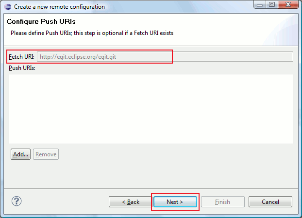
The next step is to define the Remote Specification for the push URIs. See Push Ref Specifications about the details.
Upon completion, the new Remote configuration will be visible:

It is also possible to add, remove, or change Fetch/Push Specifications for an existing Remote configuration using the context menu.
The view is auto-refreshed periodically. The Refresh button in the toolbar allows to trigger an immediate refresh:

If the Link with selection toggle is enabled, the file or folder corresponding to the current workbench selection will be displayed automatically:

If the Link with editor toggle is enabled, the file or folder corresponding to the currently active editor will be displayed automatically:
If the Hierarchical Branch Layout toggle is enabled, branches will be shown in a hierarchical layout using slash (/) as hierarchy separator:
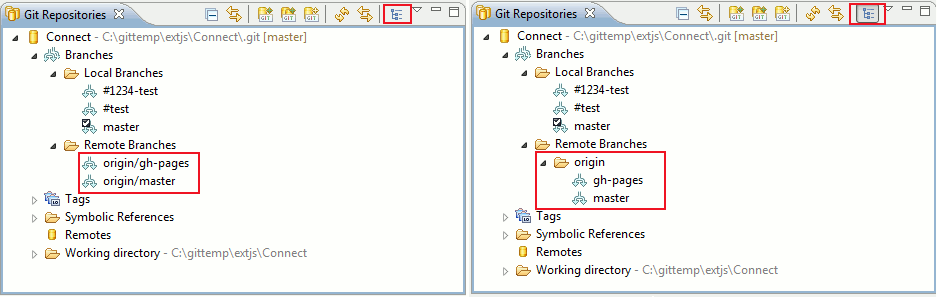
This can be helpful for organizing large numbers of branches.
"Bare" Git Repositories (as opposed to "development" or "standard" Repositories) have no working directory by definition, so all actions related to the working directory (check-out, project import, browsing the working directory) are not available for such Repositories. The "Bare-ness" of a Repository is visualized on the "Working Directory" node, which is always a leaf:

This is offered as a menu action on the "Repository" node. Note that this does not delete the Repository, but just removes the node from the view. If there are projects in the workspace which are located in the working directory of the Repository, the user will be prompted to confirm deletion of these projects from the Eclipse workspace.
|
|

|
|
| Concepts | Reference |